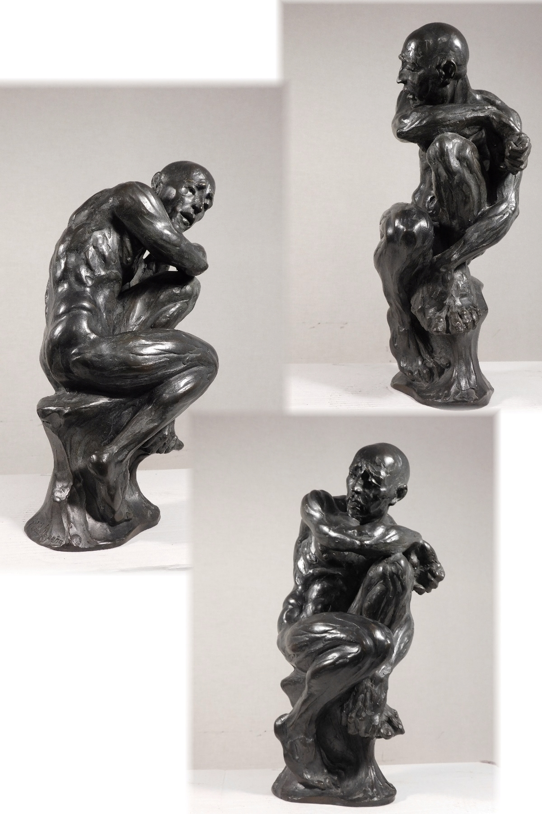
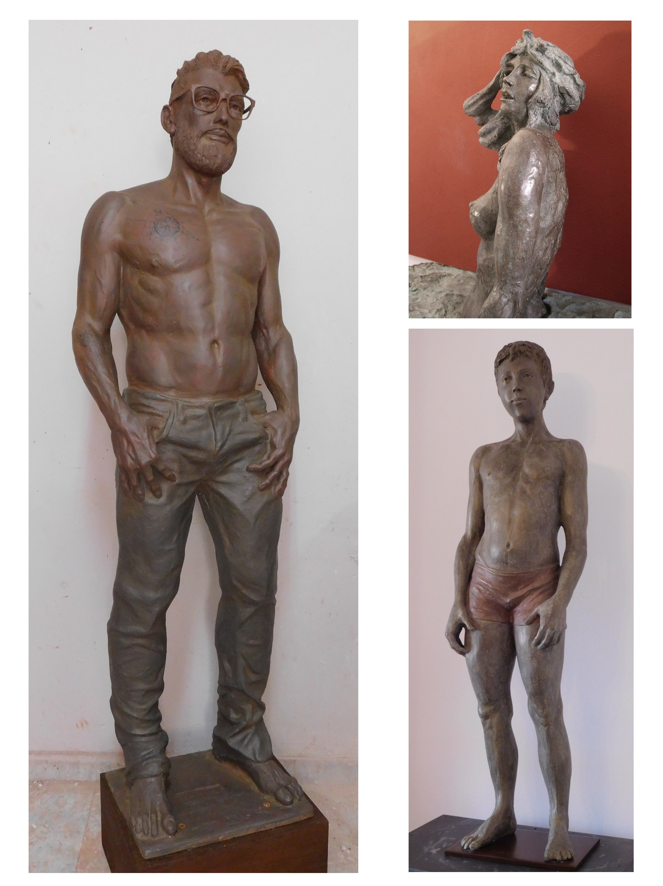
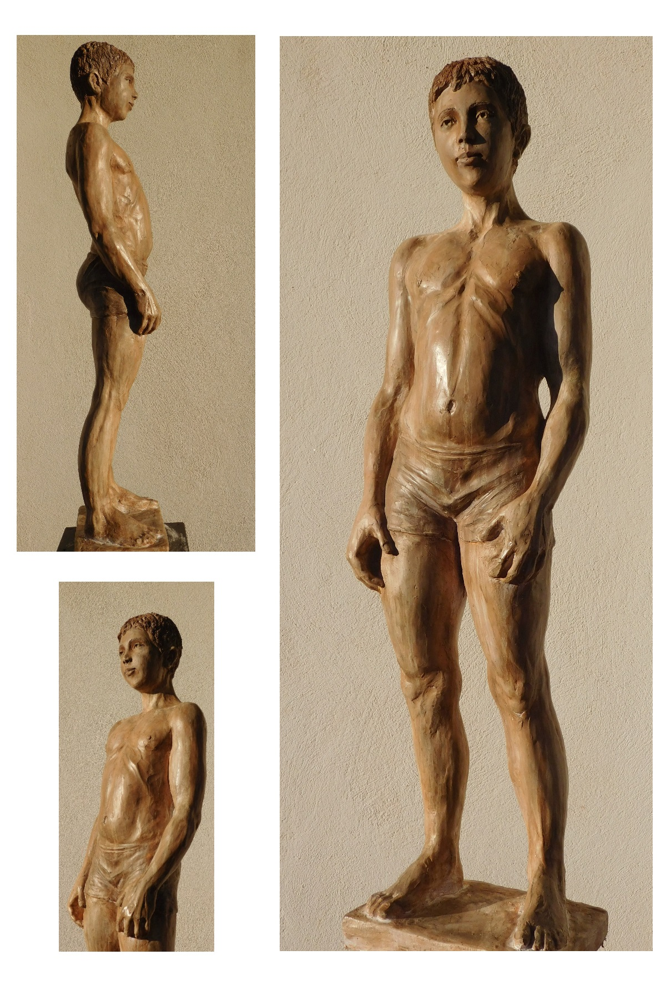
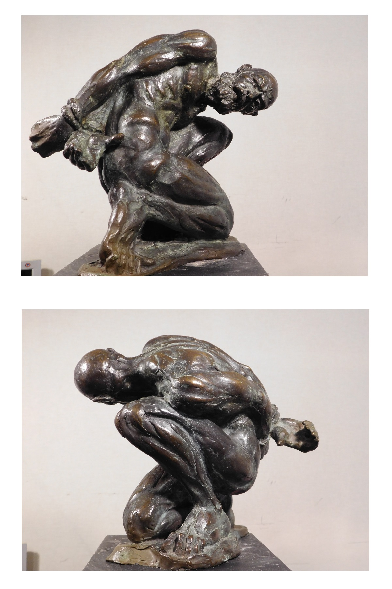
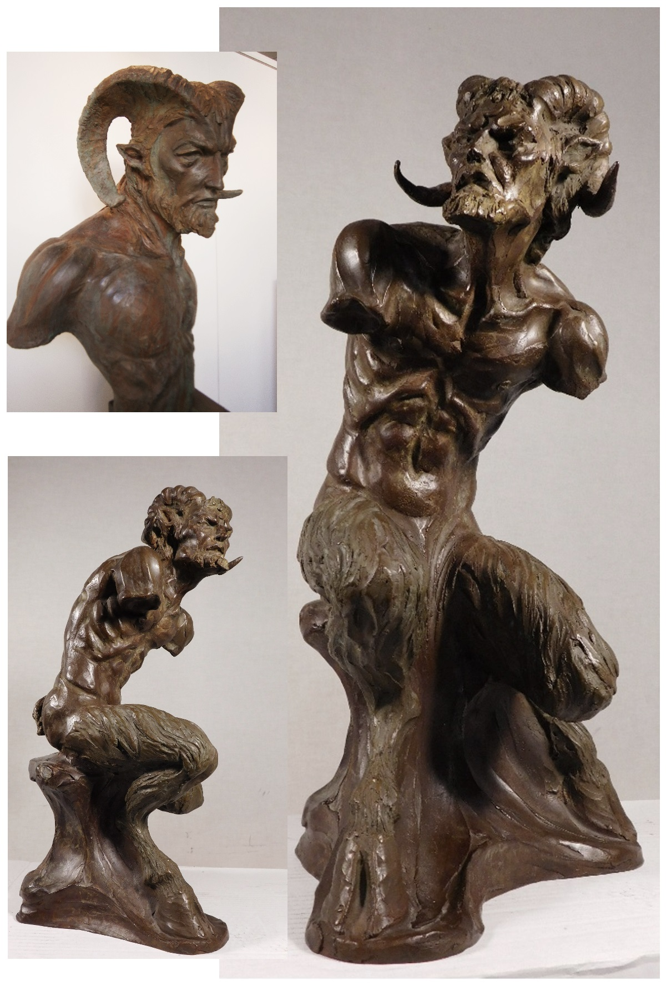
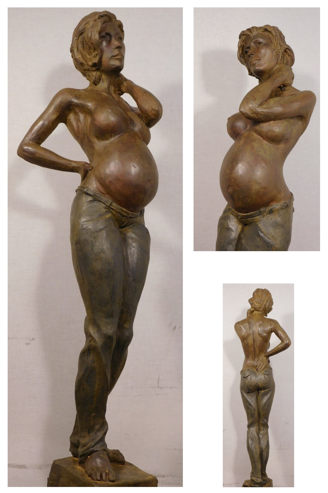
Aquí podemos ver algunos ejemplos de las enormes posibilidades expresivas del cuerpo humano al ser plasmado en una obra de arte, tanto en reposo como en movimiento.
El dominio de disciplinas como la anatomía y la biomecánica de Pablo Lapeña provienen inicialmente de su carrera de fisioterapeuta,
y posteriormente han sido optimizados como recursos visuales, tras años de observación, modelado manual, pruebas experimentales
y estudio de modelos vivos, en un continuo perfeccionamiento de las posiciones y actitudes estéticas.
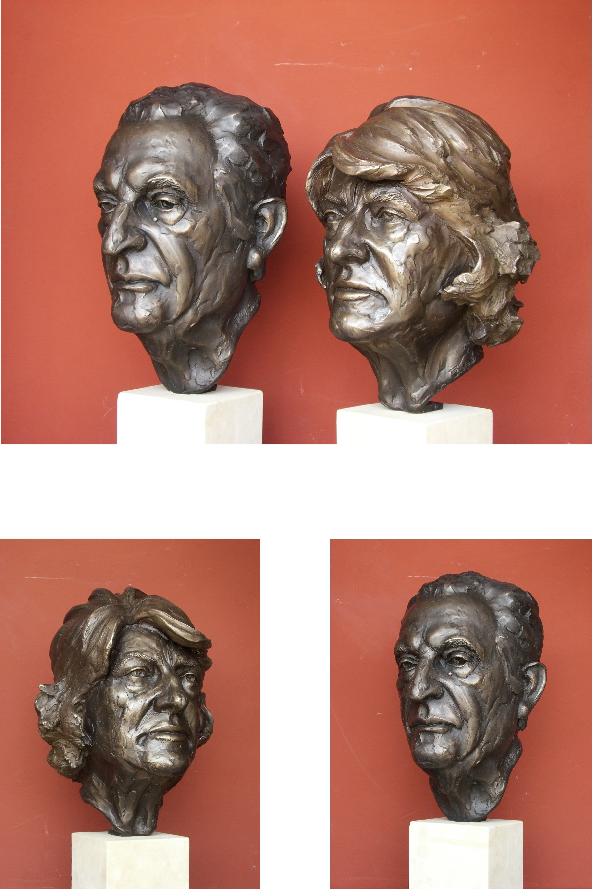
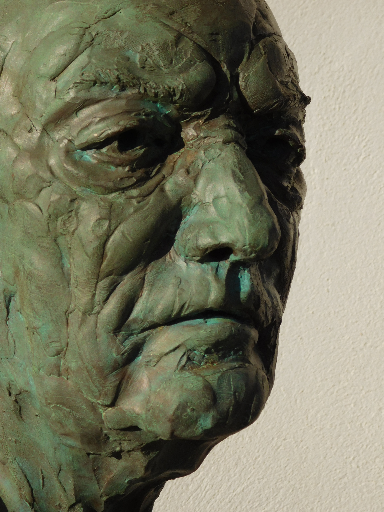
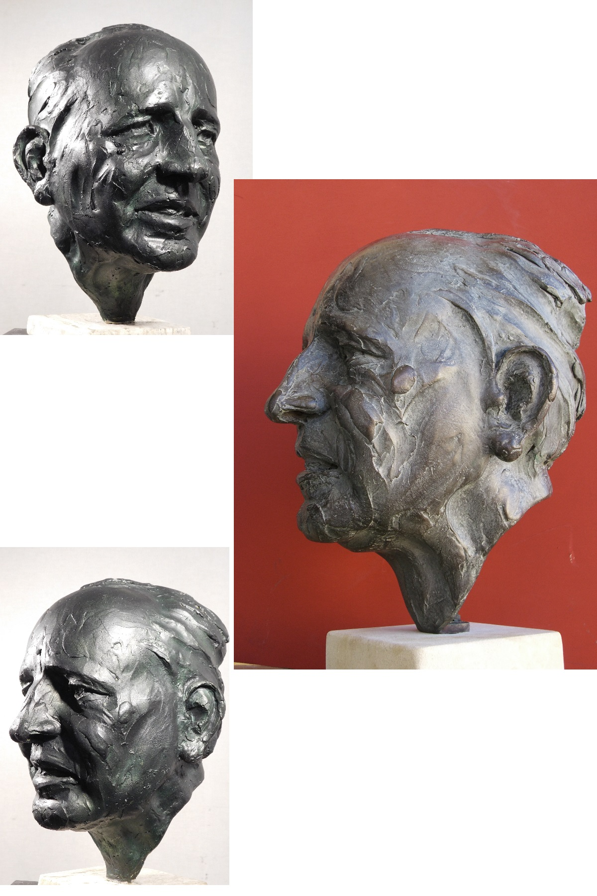

 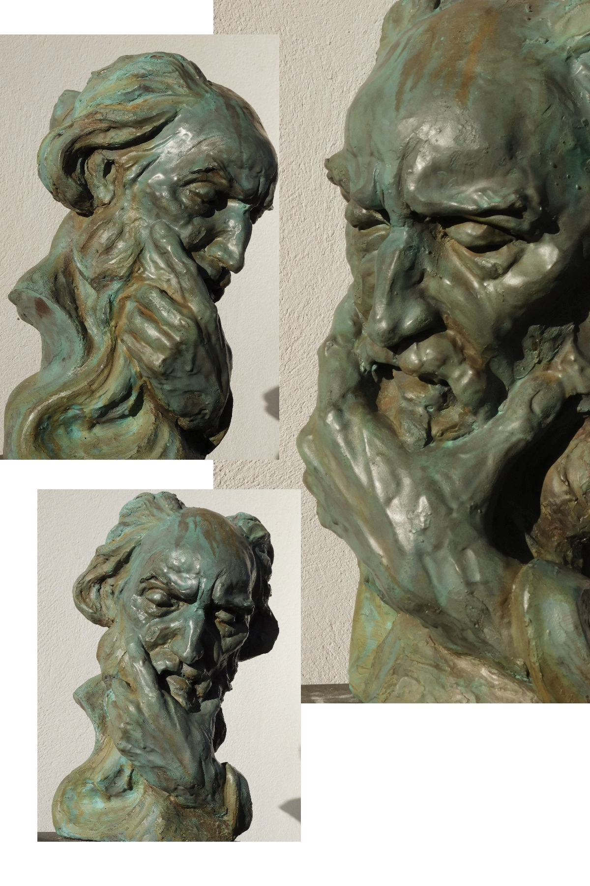
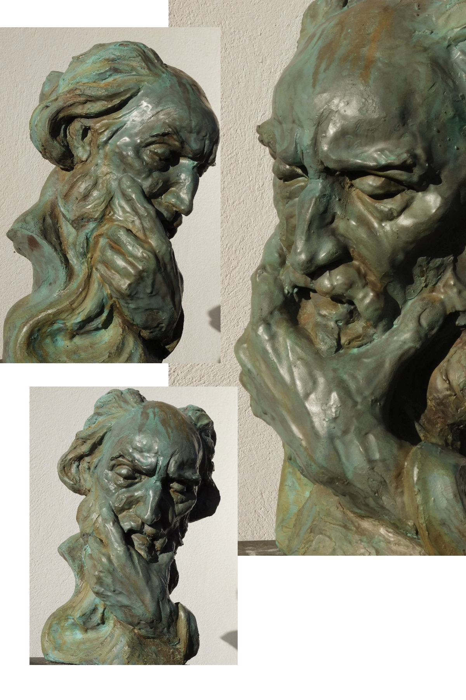
Otra de las grandes pasiones de nuestro autor es la psicología, y dentro de ésta especialmente el lenguaje no verbal, lo que le ha llevado a formarse ampliamente en este campo,
y a aprender a documentar sus matices, dadas sus aplicaciones plásticas en la escultura.
El resultado es una obra que comunica profundas emociones a través de sutiles gestos en el rostro, concebido como una fuente inagotable de transmisión de mensajes y expresión universal de humanidad.
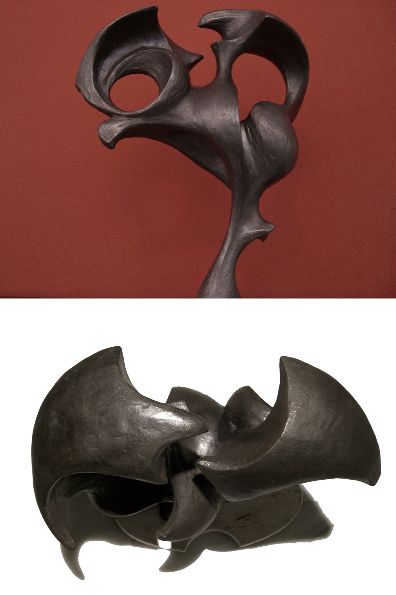
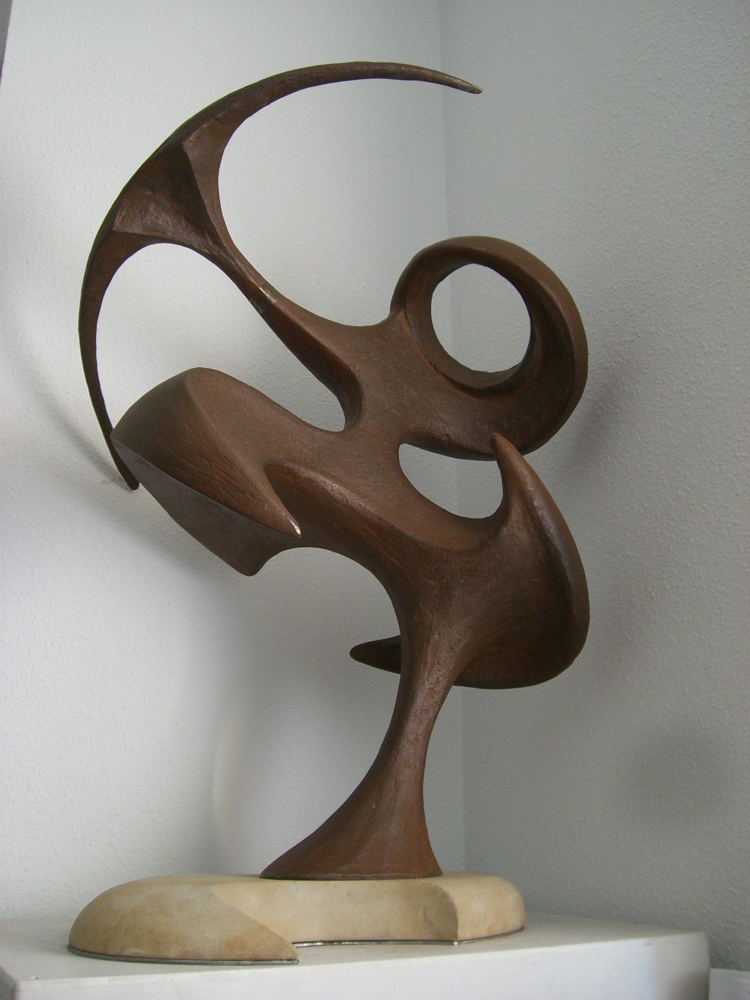


 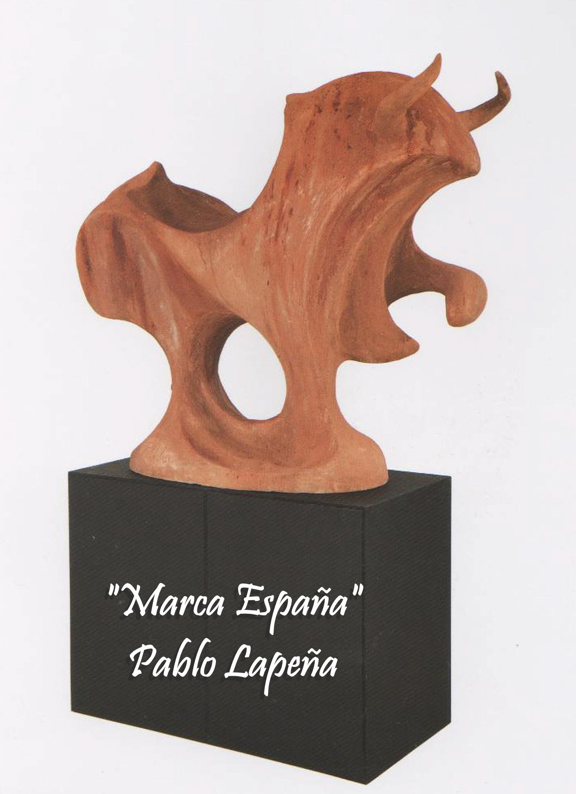
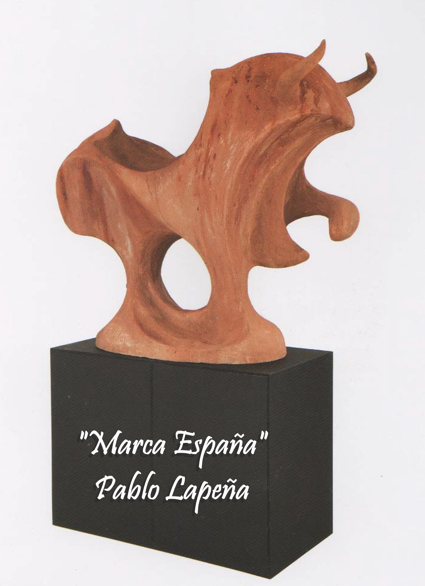
Movido por un deseo de innovación, y paralelamente a la obra de naturaleza mimética, Lapeña ha hecho algunas incursiones en un nuevo lenguaje plástico. También de base figurativa, pero tan sintetizado que casi raya la abstracción.
Con escasas referencias anatómicas, las obras de esta línea creativa toman forma a base de masas curvas alabeadas, que se articulan entre sí formando en el espacio un rítmico juego de volúmenes y vacíos en equilibrio dinámico.